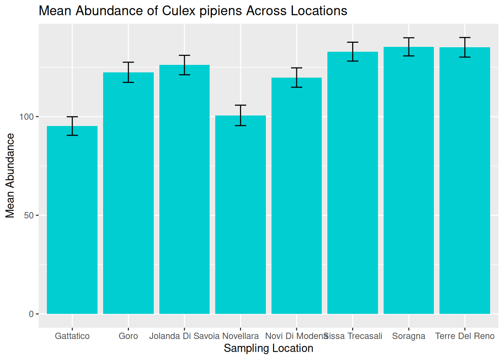

3 Live Session
3.1 Live Session Schedule
- Introduction
- Recap pre- Live Session
- Build on Abundance Plots
- Drawing Hypotheses from Complex Plots
- BREAK
- What Makes a Good Visualisation?
- Collaborative task
- Share Collaborative Task Results
- BREAK
- Communicating to Different Audiences
- Visualisation Themes & Accessible Graphics
- Prepare for Challenge Task & Conclusion
3.2 Introduction
Welcome to the One Health Vector-Borne Diseases Hub Online Training. My name is Chloё, and I work with the VBD Hub to develop training and workshops, like this session today. We are also joined by our lovely demonstrators, who will be available throughout the session to provide support and answer any questions you have.
VBD Hub is a non-profit, open-source project funded by UKRI and Defra, which aims to improve accessibility and information sharing. To do this, the project builds infrastructure and tools to allow researchers to combine knowledge and share data within the VBD research community and with policymakers.
Our focus today is Visualisations in R. By the end of this training, you should be able to:
- Generate accessible visualisations to communicate complex data to different audiences and stakeholders.
- Formulate data-driven hypotheses from effective data visualisations.
- Build collaborative, professional connections within the VBD community.
In the Pre- Live Session content, you will have seen links to recap materials and cheat sheets. Feel free to use these if you need any reminders. If you need additional support, the Forum is a good first point of call where you can discuss queries with fellow participants. Our demonstrators will keep an eye on the chat during this call and can provide more support during tasks.
The written version of this content is now available on the VBD Hub website if you wish to follow along with this format. These written materials will be available for you to access in future, including the code examples. You are welcome to follow along with the walkthrough code in this Live Session, but there is no pressure, and you can have a go at the code yourself later.
If you have any technical difficulties or lose connection, try joining the meeting again when you can. If you need technical support, please contact support@vbdhub.org (note: this is only for technical support, not statistical support or questions on the course content).
We have breaks scheduled into this session, but if you need to step away for a few minutes at all, feel free to do so quietly.
3.3 Recap Pre- Live Session Content
In the Pre- Live Session content, we covered:
- Commonly used visualisations in VBD research, notably abundance plots.
- What visualisations can tell us about data, and how this can support exploratory analysis.
- How to use observed patterns from simple visualisations to formulate data-driven hypotheses.
During the tasks, we tried identifying patterns and details out the datasets and proposing hypotheses from our visualisations:
- What patterns and data details can you identify from the Monthly Mosquito Abundance across 2023 plot?
- What hypothesis do you propose for the visualisation in Task 1: Tick Abundance Across Sampling Locations?
- What hypothesis do you propose for the visualisation in Task 2: Monthly Mosquito Abundance across 2023?
3.4 Building on Abundance Plots
In the Pre- Live Session content, we covered simple abundance plots and considered how these visualisations can be used to help identify potential patterns in exploratory analysis of vector surveillance data.
However, these simple abundance plots often only tell us part of the story. In VBD research, we typically want to understand how abundance patterns vary across time, space, and species.
Common VBD research questions consider:
- Does vector abundance change throughout the year?
- Do certain locations consistently report higher vector counts?
- Do different species show distinct seasonal patterns?
In this session, we will build on the basic abundance plots introduced in the Pre- Live Session content by developing more complex visualisations using R and the ggplot2 package.
3.4.1 Abundance Across Sampling Locations
Vector populations often vary between locations. Differences in habitat, climate, host availability, and land use can all influence vector abundance. As a result, combining data from multiple sampling sites into a single trend may obscure important spatial patterns.
In the Pre-Live Session content, we plotted the abundance of ticks across two sampling locations. To do this, we used a scatter plot to view the individual observations so that we could practice identifying patterns in the data. However, in VBD research, we would typically use a bar plot to visualise abundance across multiple locations.
Let’s start by downloading mosquito_subset_wrangled.csv. Open this dataset in RStudio and load the required packages:
library("ggplot2")
library("tidyverse")
library("lubridate")
mosquito_data <- read_csv("mosquito_subset_wrangled.csv")As our data involves multiple samples at the same site, we next want to summarise the abundance data for each location. We do this by grouping by location using the group_by() function, then summarising the abundance per location as the mean() and sd() using the summarise() function:
abundance_per_location <- mosquito_data %>%
group_by(sample_location) %>%
summarise(
mean_abundance = mean(sample_value, na.rm = TRUE),
se_abundance = sd(sample_value, na.rm = TRUE) / sqrt(sum(!is.na(sample_value)))
)We can use ggplot2 to visualise the abundance of mosquitos at multiple sampling locations by using similar code to that in the Pre- Live Session content. We start by stating our dataset and which variables we want on the x- and y-axes:
This time, instead of using geom_point(), we will use geom_col() and geom_errorbar(). This tells R that we want to plot bars with whiskers (vertical error lines):
geom_col(fill = "darkturquoise") +
geom_errorbar(aes(
ymin = mean_abundance - se_abundance,
ymax = mean_abundance + se_abundance
),
width = 0.2) +This code is starting to look heavy, but it is just building aesthetics.
In geom_col(), we can use fill to set the colour of the bars.
In geom_errorbar(), we can use aes() to set the aesthetics. In this case:
- We use
yminto set the lower end of the whisker, calculated as the mean minus the standard deviation of abundance. - We use
ymaxto set the upper end of the whisker, calculated as the mean plus the standard deviation of abundance. -
widthcontrols how wide the horizontal lines are at either end of the whisker.
The final chunk of code is adding labels using labs() - this is the same as we practised in the Pre- Live Session content:
labs(
title = "Mean Abundance of Culex pipiens Across Locations",
x = "Sampling Location",
y = "Mean Abundance"
)If we piece those chunks of code together, we can generate our visualisation:
abundance_plot_across_locations <- ggplot(abundance_per_location,
aes(x = sample_location, y = mean_abundance)) +
geom_col(fill = "darkturquoise") +
geom_errorbar(aes(
ymin = mean_abundance - se_abundance,
ymax = mean_abundance + se_abundance
),
width = 0.2) +
labs(
title = "Mean Abundance of Culex pipiens Across Locations",
x = "Sampling Location",
y = "Mean Abundance"
)
abundance_plot_across_locations
abundance_plot_across_locations
Tip: Remember to save your graphic:
ggsave("abundance_across_locations.pdf", plot = abundance_plot_across_locations)
We can now use this visualisation to compare abundance patterns across sampling sites:
- Mean abundance varies across locations, with Sorragna and Terre Del Reno showing the highest mean mosquito abundance, and Gattatico showing the lowest mean mosquito abundance.
- There is a lot of variation within each location. This is consistent across the dataset, suggesting natural variation in the data to be explored further.
Visualisations such as this can help researchers identify potential hotspots of vector activity and guide further investigation into the ecological factors driving these patterns. For our graphic, we can see a lot of variation within each location. One way to assess this in more detail is to consider abundance over time.
3.5 Drawing Hypotheses from Complex Visualisations (10 minutes)
Time-specific example
Species-specific example
3.7 Collaborative Task (45 mins)
Breakout rooms - participants are given a messy or incorrect graph and need to work together to fix it.
Ideally I would like each breakout room to have a different “problem” graph to fix, but this will depend on timings when developing content.
3.9 Communicating to Different Audiences (15 mins)
Academics, policy makers, public engagement
What the audience needs and what to emphasise.
3.10 Visualisation Themes & Accessible Graphics (15 mins)
ggplot themes
Colour blind friendly, alt-text, font size, contrast, shapes as well as colour, clear legends